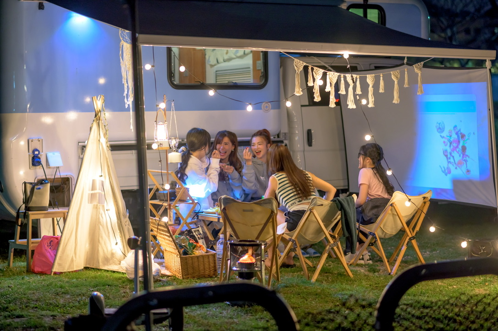

想在海邊醒來嗎？
把車停在海岸旁，早上睜開眼就看見海。玩水後回車沖腳、煮咖啡，不必趕著換飯店。

露營車最好玩的地方，往往是車子停下來以後。
把車停在海岸旁，早上睜開眼就看見海。玩水後回車沖腳、煮咖啡，不必趕著換飯店。
桌椅、燈串、投影——把露營車變成會移動的戶外客廳，夜晚更好聚、更好拍。
週五取車也能有完整三天兩夜感：第一晚露營區熟悉設備，第二晚留給海邊慢遊。
車內已有床鋪、冷暖氣、冰箱與簡易衛浴；戶外套組可選，讓你專心享受旅程。
送到家、睡得好、設備齊、車邊生活感

台北為主，桃園與新竹可洽詢。交車時約 30 分鐘教學，新手友善。

合法乘坐 6 人，兩張雙人床；建議睡眠 5 大或 4 大 2 小，適合家庭與好友。

簡易衛浴與冷熱水、卡式爐與餐具、約 110 公升清水，旅行更輕鬆。

可選網美露營套組＋影音娛樂套組，讓車邊更好拍、夜晚更好玩。完整優惠與品項見價格與車款介紹。
海邊、電影、朋友聚餐、親子慢遊——這些都是客人真實玩過的節奏。


